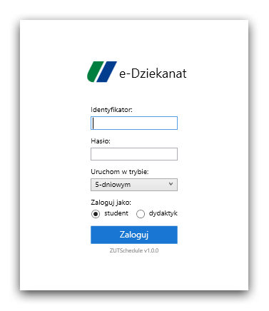

Post archive
Plan zajęć cz. 8 - Poprawki
Ten tydzień poświęciłem na poprawki w aplikacji. Nazbierało się trochę błędów, które trzeba naprawić. Pierwszy problem występuje podczas przejścia za bardzo wstecz na planie zajęć aplikacja się crashuje. Innym błędem jest możliwość rozpoczęcia procesu logowania kilkukrotnie.
Przewijanie planu zajęć
Podczas cofania się w planie zajęć dochodziło do zdarzenia, kiedy aplikacja przestawała działać. Błąd okazał się banalny, gdyż okazało się, że wartość przesunięcia przechodziła na liczby ujemne. Naprawienie tego błędu było bardzo proste, po prostu, jeżeli liczba ma zmienić się na ujemną to przerywam akację.Problem z logowaniem
Po rozpoczęciu procesu logowania przycisk był cały czas aktywny przez co użytkownik mógł rozpocząć kilka operacji logowania. Dodałem nową zmienną sygnalizującą trwający proces logowania. Jeżeli jest aktywny przycisk jest wyłączany i użytkownik nie może nacisnąć ponownie na przycisk logowania.{kind=link}

Dodatkowo dodałem możliwość wyboru liczby wyświetlanych dni tygodnia na ekranie logowania. Użytkownik przed zalogowaniem może zmienić domyślne ustawienie pięciu dni na siedem dni lub jeden dzień, odpowiednio według jego zapotrzebowania.